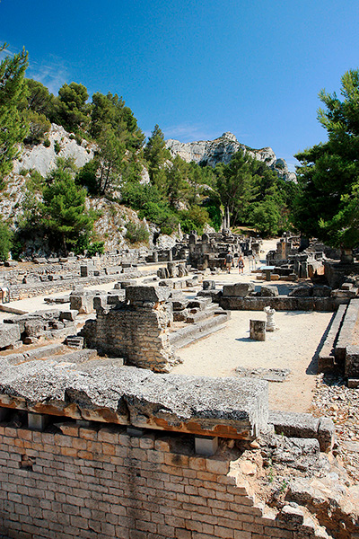
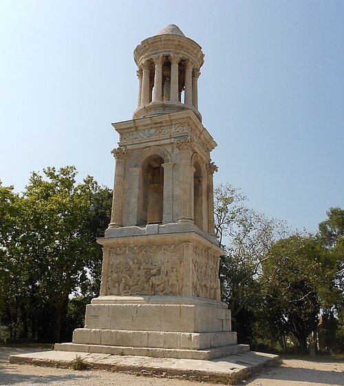
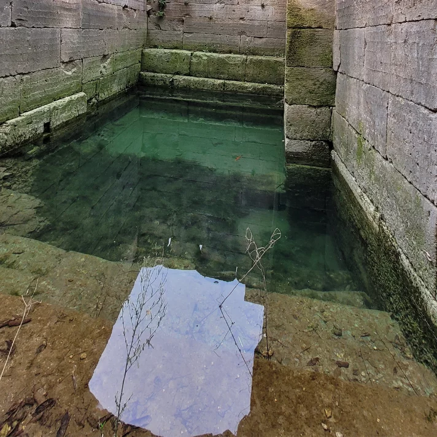
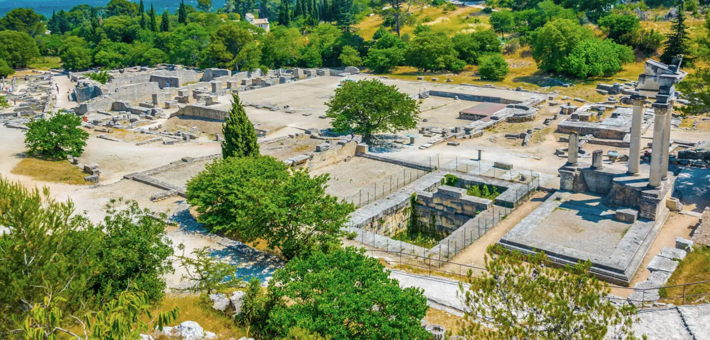

Un voyage dans le temps au cœur de la Provence.
Imaginez une ville entière, vibrante de vie, de commerces et de prières, qui disparaît soudainement de la carte pour finir ensevelie sous huit mètres de boue et d’alluvions descendus de la montagne.
Pendant près de 1 700 ans, au pied des Alpilles, on a fait pousser des oliviers sans se douter que, juste sous les racines, dormait Glanum, la "Petite Rome" de Provence. Ce n'est qu'en 1921 que des passionnés, comme Jules Formigé et Pierre de Brun, ont donné les premiers coups de pioche pour sortir cette belle endormie de son linceul de terre. Aujourd’hui, le site nous offre un véritable mille-feuille de civilisations : des Gaulois, des Grecs et des Romains qui se sont empilés les uns sur les autres.

🗺️ Votre Itinéraire Complet
Suivez ce parcours logique pour vivre une visite complète de Glanum. Comptez environ 1h30 à 2h pour l’ensemble du site, en prenant le temps d’explorer chaque étape.
✓ Étape 1 : Les Antiques (Arc de Triomphe & Mausolée) — À l’entrée du site
✓ Étape 2 : La Source Sacrée — Au cœur du vallon
✓ Étape 3 : La Vie Quotidienne (Forum, Thermes, Maison) — Au centre-ville
✓ Étape 4 : Conseils Pratiques — Avant de partir
✓ Étape 5 : Le Repos du Guerrier — Sur une terrasse avec un rosé 🍷
Les Sentinelles de la Route : "Les Antiques"
Avant d’entrer dans la ville, deux géants vous accueillent sur le bord de la route. Ce sont les Antiques, les seuls monuments qui n’ont jamais été enterrés et qui ont fasciné les voyageurs, du roi Charles IX à Nostradamus.

L’Arc de Triomphe
C’est la porte d’honneur de la ville. Construit sous l’empereur Auguste, il célébrait la conquête de la Gaule. Si vous regardez bien les sculptures sur les côtés, vous y verrez des Gaulois enchaînés à des trophées d’armes. Le message était clair pour ceux qui entraient : ici, c’est Rome qui commande !

Le Mausolée des Jules (ou des Iulii)
Ne vous laissez pas tromper par son nom, c’est en réalité un cénotaphe (un tombeau vide !). Construit vers 30-20 av. J.-C., il a été érigé par trois frères d’une riche famille locale pour honorer leur père et leur grand-père.

La Source Sacrée : Le Cœur Spirituel
En franchissant les remparts, vous entrez dans un vallon stratégique qui reliait autrefois l'Italie à l'Espagne. Pourquoi s'installer dans ce creux de montagne ? Pour une raison vitale : la Source Sacrée.
Le Dieu Glan : Tout a commencé au VIe siècle av. J.-C. avec les Gaulois (les Salyens). Ils vénéraient un dieu guérisseur nommé Glan, dont l'eau de la source était censée soigner tous les maux. On y a même trouvé des traces du "culte des têtes coupées" : les Gaulois exposaient les crânes de leurs ennemis pour protéger la cité... une ambiance un peu plus brute que celle des Romains !
Le gendre de l'Empereur : Même les plus puissants venaient ici en cure thermale. Agrippa, le gendre de l'empereur Auguste, souffrait des jambes. Il est venu se faire soigner à Glanum et, pour dire merci à la source, il a fait construire un élégant petit temple dédié à Valetudo, la déesse de la santé.
La Vie Quotidienne : Forum, Thermes & Demeures
Le Forum
C'était le cœur battant, là où on votait les lois, où on rendait justice dans la Basilique et où on faisait ses courses au marché. Sous le dallage romain, les archéologues ont découvert un puits à dromos (un puits avec un escalier de 37 marches !) qui servait déjà aux rituels grecs bien avant l'arrivée de César.
Les Thermes
Le confort à la romaine ! Juste à côté, les Thermes montrent que les habitants de Glanum savaient vivre. On y trouvait des piscines (natatio) et surtout un système de chauffage par le sol, l'hypocauste : des esclaves entretenaient des foyers pour chauffer l'air qui circulait sous les briques du sol.
La Maison des Antes
C’est la demeure d’un riche marchand. Elle s’organisait autour d’une cour à colonnes (le péristyle) avec un bassin au milieu pour récupérer l’eau de pluie (l’impluvium). À l'époque, les murs étaient peints de couleurs éclatantes et les sols recouverts de mosaïques raffinées.

La fin d'un monde et la naissance de Saint-Rémy
Vers 260 après J.-C., la fête s'arrête. Les invasions barbares pillent et détruisent la ville. Les survivants abandonnent le vallon et vont s'installer un kilomètre plus loin, dans la plaine, pour fonder ce qui deviendra Saint-Rémy-de-Provence.
Pendant des siècles, Glanum a servi de "carrière" : les habitants venaient y chercher des pierres déjà taillées pour construire les maisons du village actuel.
Découvrir le site en images
Un superbe aperçu vidéo pour vous projeter dans les ruines de la cité avant d'y mettre les pieds.
Étape 4 : Préparer la Visite
- footprint Chaussures confortables : Prévoyez de bonnes chaussures de marche, le sol du site archéologique est resté d'époque (cailloux et pavés irréguliers).
- wb_sunny Soleil de Provence : Le site est entièrement à ciel ouvert et sans zone d'ombre. N'oubliez pas les chapeaux, les lunettes et surtout une bouteille d'eau !
- schedule Temps de parcours : Comptez environ 1h30 à 2h pour apprécier la balade complète à votre rythme, des Antiques jusqu'à la source sacrée.
Le Repos du Guerrier Archéologique
"Après avoir marché entre les ruines des Gaulois, des Grecs et des Romains, vous avez mérité une pause bien méritée..."
Le Rituel de Récupération Provençale
Dirigez-vous vers une terrasse ombragée du village de Saint-Rémy-de-Provence. Là, dans la brise des Alpilles, commandez-vous :
Le nectar des dieux provençaux. Frais, pétillant, et tellement apprécié par les archéologues qui ont fouillé Glanum eux-mêmes (probablement).
Olives noires concassées, ail, anchois... C'est l'équivalent moderne du "pique-nique des Romains". Moins de pestilence que les thermes antiques, promis.
💡 Conseil de guide expérimenté :
Observez le ciel au-dessus des Alpilles, les mêmes montagnes qui ont vu prospérer Glanum pendant 1 700 ans. Levez votre verre à la résilience des pierres et à la magie de la Provence. Les Romains n'avaient pas le rosé Lubéron, mais ils auraient adoré.
Bon repos ! 🌞 Vous avez maintenant parcouru Glanum comme un véritable historien en herbe. Santé !